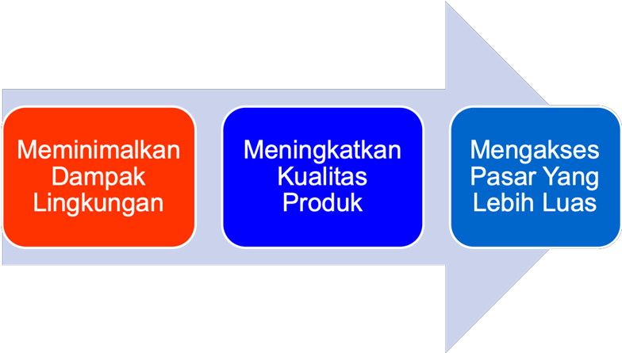
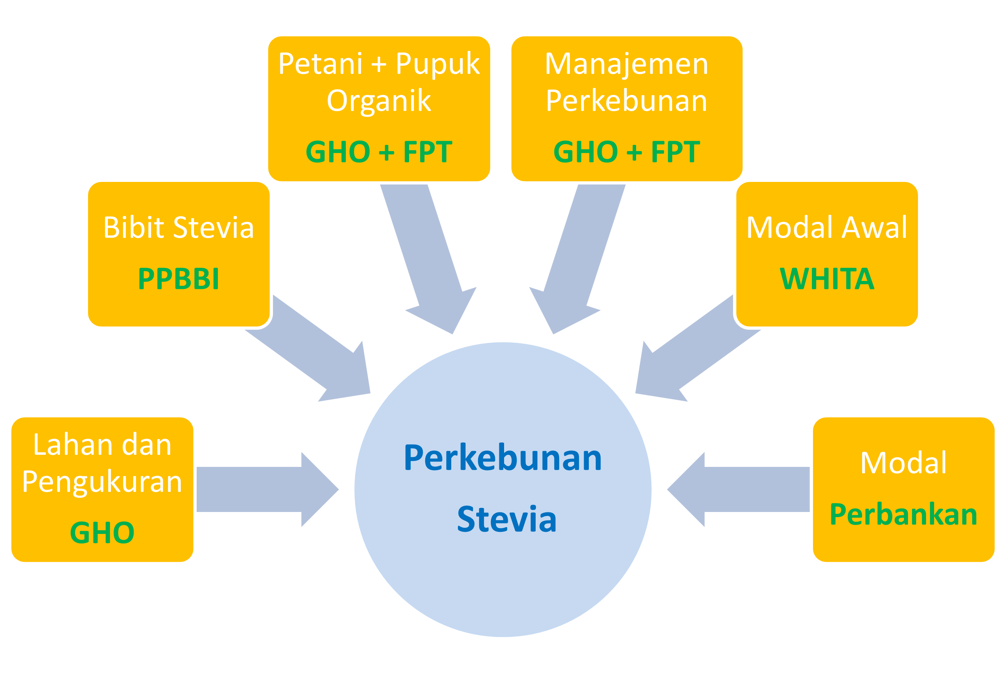
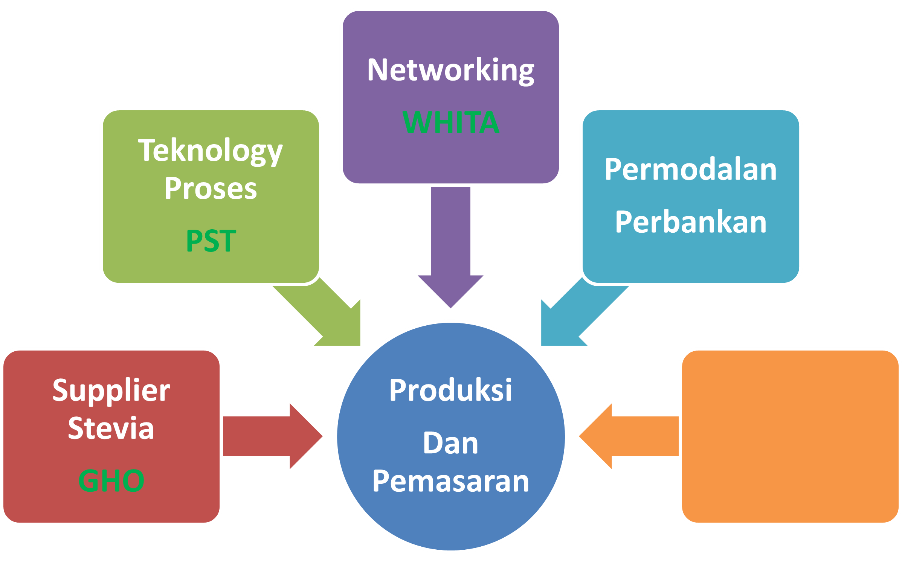

Gula Tebu dan Stevia dapat digunakan untuk mempermanis berbagai produk di seluruh dunia termasuk berbagai macam makanan dan minuman , makanan olahan dan yang dipanggang serta soda dan permen. Kedua pemanis tersebut berasal dari alam. Gula tebu tentunya berasal dari Pohon Tebu. Sedangkan Stevia adalah berasal dari daun stevia rebaudiana, tanaman sebangsa peredu yang ditemukan di Amerika Selatan dan daerah tropis lainnya.
1. Keduanya bisa digunakan sebagai
pemanis dan pemanis
alami
2. Kedua tanaman
ini hanya dapat tumbuh di bagian tropis dunia.
3. Stevia tidak mengandung kalori sehingga aman bagi penderita diabetes, sedangkan gula tebu mengandung kalori.
4. Kedua tanaman
milik keluarga yang berbeda.
5. Stevia, secara keseluruhan
tampak jauh lebih sehat.
6. Stevia, bisa 20x lebih manis dari tebu dan 200x
lebih manis, jika dimurnikan.
Tanaman Stevia adalah tumbuhan
yang rasanya sangat manis dan telah digunakan sebagai pemanis minuman sejak
abad ke-16. Daun stevia kering memiliki
tingkat kemanisan 20 kali lebih kuat dibandingkan gula pasir dari tebu. Sedangkan kemanisan ekstraknya 200 –
300 kali dari gula tebu, dimana Indeks
Glikemik sama dengan NOL. Sebagai tanaman herbal dari keluarga bunga matahari, Stevia telah digunakan
sebagai pemanis oleh orang Indian Guarani di Paraguay selama ratusan tahun.
Stevia telah diolah dan diekstraksi menjadi
produk pemanis untuk menggantikan
gula. Ekstrak daun stevia ini disebut glikosida steviol. Proses ekstrasi
dilakukan dengan pengeringan daun, ekstrasi, dan pemurnian.
Ekstrak Stevia mempunyai kemanisan hingga 200 - 300 kali lebih manis dari pada gula tebu bila di ekstrak, 100 % bebas kalori dan Indeks Glikemik sama dengan NOL serta sangat cocok sebagai pemanis dalam makanan, permen, minuman dan produk-produk manis lainnya.Saat ini ribuan produk telah menggunakan stevia terutama minuman ringan, cokelat, permen, es krim, produk nutrisi, dan saus tomat.
Sebagai pengganti gula tebu, ada beberapa potensi
manfaat dari stevia.
Beberapa
di antaranya, adalah:
• Stevia alami dan
100% bebas kalori.
• Stevia tidak menyebabkan kerusakan gigi
• Tidak mempengaruhi gula darah, cocok untuk penderita
diabetes
• Tahan panas,
cocok untuk memasak
dan memanggang
• Stevia dapat ditanam
secara organik tanpa pestisida
Tanaman Stevia mempunyai ciri khas pada daunnya, membulat seperti telur tapi sedikit bergerigi di tepi daunnya, tumpul pada hujungnya namun runcing pada pangkalnya. Selain itu, batangnya membulat dan beruas dengan ketinggian rata-rata 30 hingga 80 cm saja.
Tanaman Stevia mempunyai karakter :
• Tumbuh baik di atas 800 - 2000 meter dpl
• Menyukai tanah yang gembur
• Terbebas dari rumput liar
• Tidak ada genangan air
• Sinar matahari penuh
POTENSI Daun Stevia Klon BP dan BS Hasil dari PPBBI Mempunyai Kandungan Steviosida 98 ( rendah ) dan Reb A 347 ( tinggi ), Populasi per Hektar 90.000 Tanaman, Produksi Daun Kering 4.000 Kg/Ha/tahun dengan Panen 4 - 5 kali per tahun.
Maksud dan Tujuan Indikasi Geografis Stevia untuk Sulawesi Tengah
Proses Penanaman Stevia pada gambar dibawah ini.
Proses Produksi dan Pemasaran Gula Stevia pada gambar dibawah ini.
